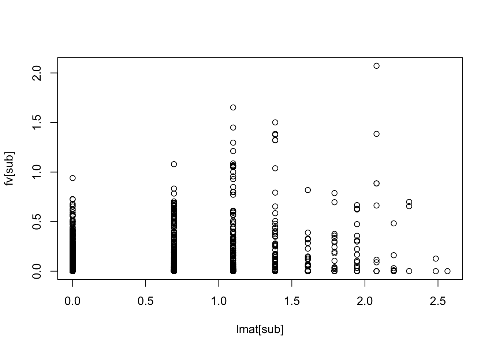
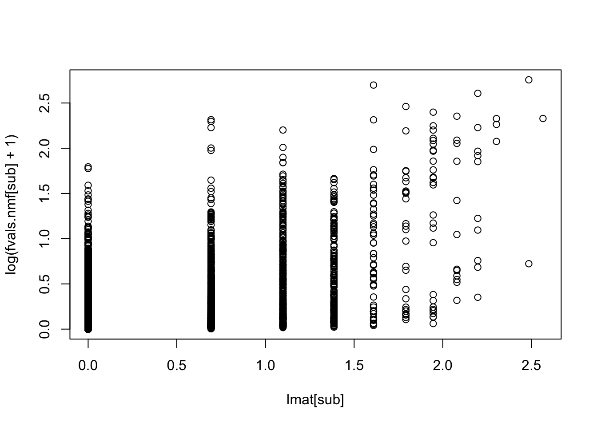
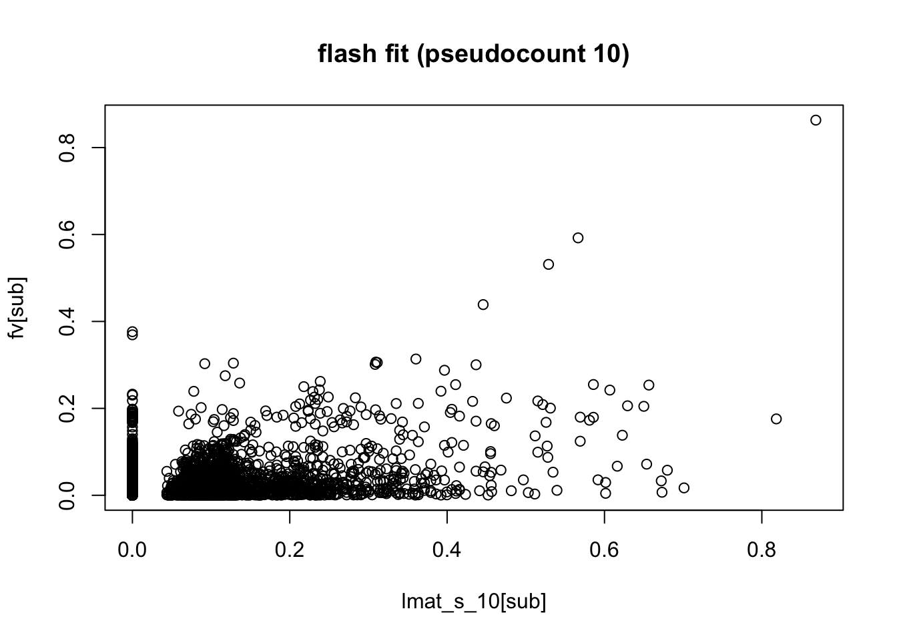
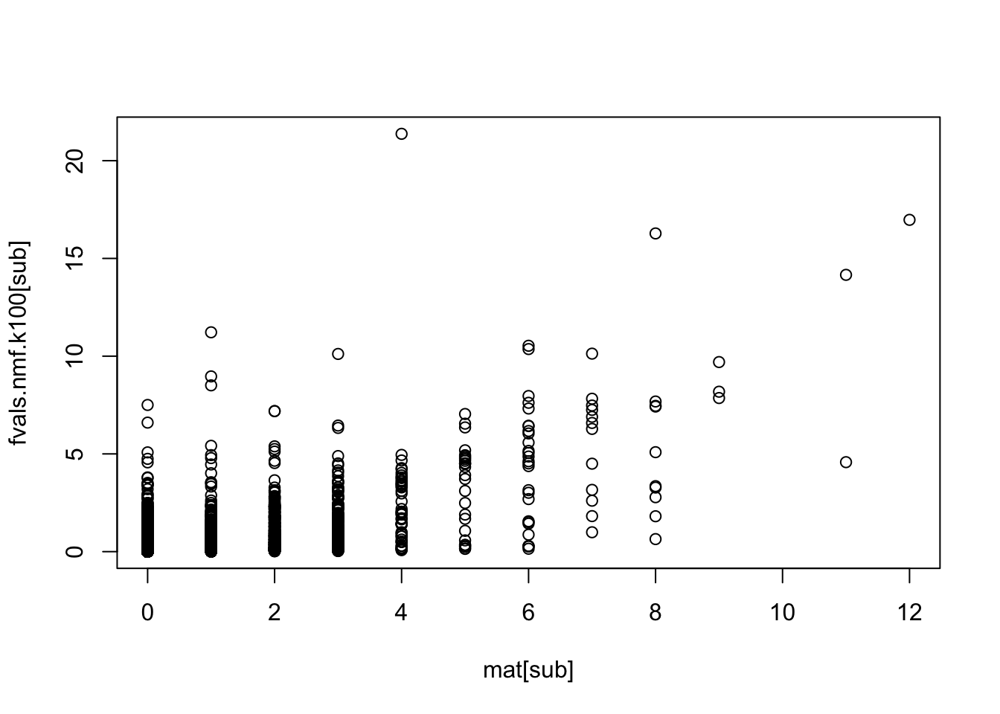
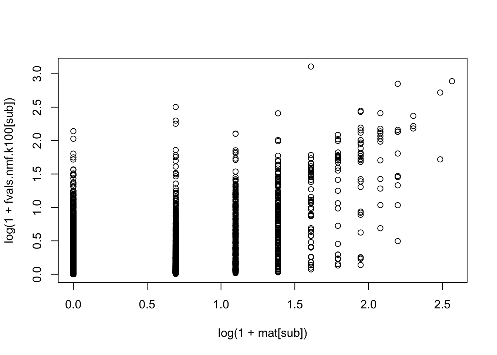
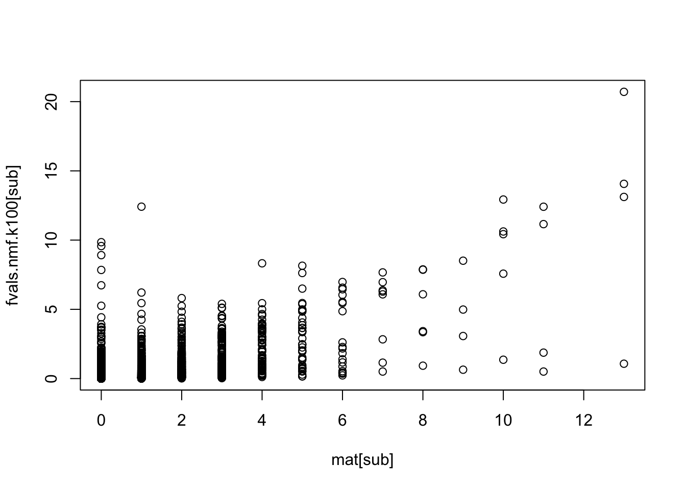
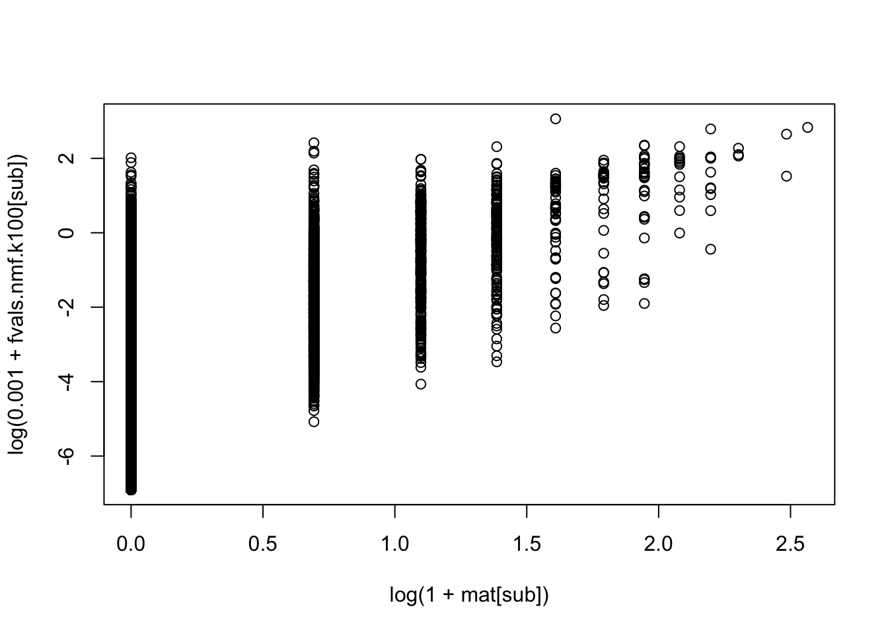
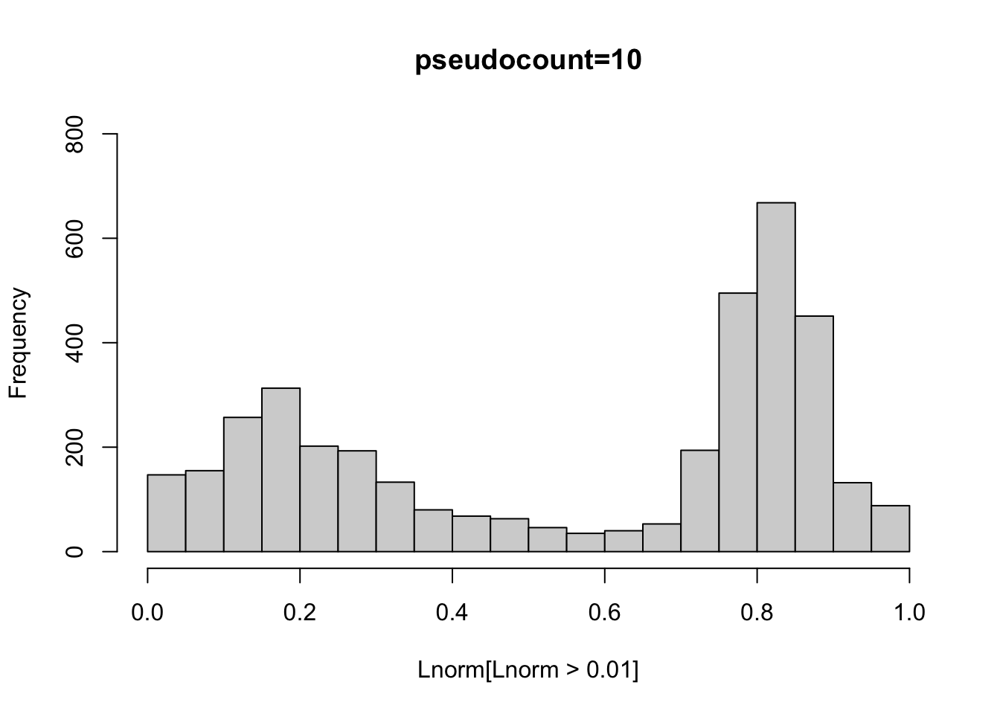

flashier_sla_text
Matthew Stephens
2023-10-17
Last updated: 2023-10-20
Checks: 7 0
Knit directory: misc/analysis/
This reproducible R Markdown analysis was created with workflowr (version 1.7.0). The Checks tab describes the reproducibility checks that were applied when the results were created. The Past versions tab lists the development history.
Great! Since the R Markdown file has been committed to the Git repository, you know the exact version of the code that produced these results.
Great job! The global environment was empty. Objects defined in the global environment can affect the analysis in your R Markdown file in unknown ways. For reproduciblity it’s best to always run the code in an empty environment.
The command set.seed(1) was run prior to running the
code in the R Markdown file. Setting a seed ensures that any results
that rely on randomness, e.g. subsampling or permutations, are
reproducible.
Great job! Recording the operating system, R version, and package versions is critical for reproducibility.
Nice! There were no cached chunks for this analysis, so you can be confident that you successfully produced the results during this run.
Great job! Using relative paths to the files within your workflowr project makes it easier to run your code on other machines.
Great! You are using Git for version control. Tracking code development and connecting the code version to the results is critical for reproducibility.
The results in this page were generated with repository version 597ecff. See the Past versions tab to see a history of the changes made to the R Markdown and HTML files.
Note that you need to be careful to ensure that all relevant files for
the analysis have been committed to Git prior to generating the results
(you can use wflow_publish or
wflow_git_commit). workflowr only checks the R Markdown
file, but you know if there are other scripts or data files that it
depends on. Below is the status of the Git repository when the results
were generated:
Ignored files:
Ignored: .DS_Store
Ignored: .Rhistory
Ignored: .Rproj.user/
Ignored: analysis/.RData
Ignored: analysis/.Rhistory
Ignored: analysis/ALStruct_cache/
Ignored: data/.Rhistory
Ignored: data/methylation-data-for-matthew.rds
Ignored: data/pbmc/
Untracked files:
Untracked: .dropbox
Untracked: Icon
Untracked: analysis/GHstan.Rmd
Untracked: analysis/GTEX-cogaps.Rmd
Untracked: analysis/PACS.Rmd
Untracked: analysis/Rplot.png
Untracked: analysis/SPCAvRP.rmd
Untracked: analysis/admm_02.Rmd
Untracked: analysis/admm_03.Rmd
Untracked: analysis/cholesky.Rmd
Untracked: analysis/compare-transformed-models.Rmd
Untracked: analysis/cormotif.Rmd
Untracked: analysis/cp_ash.Rmd
Untracked: analysis/eQTL.perm.rand.pdf
Untracked: analysis/eb_prepilot.Rmd
Untracked: analysis/eb_var.Rmd
Untracked: analysis/ebpmf1.Rmd
Untracked: analysis/ebpmf_sla_text.Rmd
Untracked: analysis/ebspca_sims.Rmd
Untracked: analysis/explore_psvd.Rmd
Untracked: analysis/fa_check_identify.Rmd
Untracked: analysis/fa_iterative.Rmd
Untracked: analysis/flash_test_tree.Rmd
Untracked: analysis/flash_tree.Rmd
Untracked: analysis/greedy_ebpmf_exploration_00.Rmd
Untracked: analysis/ieQTL.perm.rand.pdf
Untracked: analysis/lasso_em_03.Rmd
Untracked: analysis/m6amash.Rmd
Untracked: analysis/mash_bhat_z.Rmd
Untracked: analysis/mash_ieqtl_permutations.Rmd
Untracked: analysis/methylation_example.Rmd
Untracked: analysis/mixsqp.Rmd
Untracked: analysis/mr.ash_lasso_init.Rmd
Untracked: analysis/mr.mash.test.Rmd
Untracked: analysis/mr_ash_modular.Rmd
Untracked: analysis/mr_ash_parameterization.Rmd
Untracked: analysis/mr_ash_ridge.Rmd
Untracked: analysis/mv_gaussian_message_passing.Rmd
Untracked: analysis/nejm.Rmd
Untracked: analysis/nmf_bg.Rmd
Untracked: analysis/normal_conditional_on_r2.Rmd
Untracked: analysis/normalize.Rmd
Untracked: analysis/pbmc.Rmd
Untracked: analysis/pca_binary_weighted.Rmd
Untracked: analysis/pca_l1.Rmd
Untracked: analysis/poisson_nmf_approx.Rmd
Untracked: analysis/poisson_shrink.Rmd
Untracked: analysis/poisson_transform.Rmd
Untracked: analysis/pseudodata.Rmd
Untracked: analysis/qrnotes.txt
Untracked: analysis/ridge_iterative_02.Rmd
Untracked: analysis/ridge_iterative_splitting.Rmd
Untracked: analysis/samps/
Untracked: analysis/sc_bimodal.Rmd
Untracked: analysis/shrinkage_comparisons_changepoints.Rmd
Untracked: analysis/susie_en.Rmd
Untracked: analysis/susie_z_investigate.Rmd
Untracked: analysis/svd-timing.Rmd
Untracked: analysis/temp.RDS
Untracked: analysis/temp.Rmd
Untracked: analysis/test-figure/
Untracked: analysis/test.Rmd
Untracked: analysis/test.Rpres
Untracked: analysis/test.md
Untracked: analysis/test_qr.R
Untracked: analysis/test_sparse.Rmd
Untracked: analysis/tree_dist_top_eigenvector.Rmd
Untracked: analysis/z.txt
Untracked: code/multivariate_testfuncs.R
Untracked: code/rqb.hacked.R
Untracked: data/4matthew/
Untracked: data/4matthew2/
Untracked: data/E-MTAB-2805.processed.1/
Untracked: data/ENSG00000156738.Sim_Y2.RDS
Untracked: data/GDS5363_full.soft.gz
Untracked: data/GSE41265_allGenesTPM.txt
Untracked: data/Muscle_Skeletal.ACTN3.pm1Mb.RDS
Untracked: data/Thyroid.FMO2.pm1Mb.RDS
Untracked: data/bmass.HaemgenRBC2016.MAF01.Vs2.MergedDataSources.200kRanSubset.ChrBPMAFMarkerZScores.vs1.txt.gz
Untracked: data/bmass.HaemgenRBC2016.Vs2.NewSNPs.ZScores.hclust.vs1.txt
Untracked: data/bmass.HaemgenRBC2016.Vs2.PreviousSNPs.ZScores.hclust.vs1.txt
Untracked: data/eb_prepilot/
Untracked: data/finemap_data/fmo2.sim/b.txt
Untracked: data/finemap_data/fmo2.sim/dap_out.txt
Untracked: data/finemap_data/fmo2.sim/dap_out2.txt
Untracked: data/finemap_data/fmo2.sim/dap_out2_snp.txt
Untracked: data/finemap_data/fmo2.sim/dap_out_snp.txt
Untracked: data/finemap_data/fmo2.sim/data
Untracked: data/finemap_data/fmo2.sim/fmo2.sim.config
Untracked: data/finemap_data/fmo2.sim/fmo2.sim.k
Untracked: data/finemap_data/fmo2.sim/fmo2.sim.k4.config
Untracked: data/finemap_data/fmo2.sim/fmo2.sim.k4.snp
Untracked: data/finemap_data/fmo2.sim/fmo2.sim.ld
Untracked: data/finemap_data/fmo2.sim/fmo2.sim.snp
Untracked: data/finemap_data/fmo2.sim/fmo2.sim.z
Untracked: data/finemap_data/fmo2.sim/pos.txt
Untracked: data/logm.csv
Untracked: data/m.cd.RDS
Untracked: data/m.cdu.old.RDS
Untracked: data/m.new.cd.RDS
Untracked: data/m.old.cd.RDS
Untracked: data/mainbib.bib.old
Untracked: data/mat.csv
Untracked: data/mat.txt
Untracked: data/mat_new.csv
Untracked: data/matrix_lik.rds
Untracked: data/paintor_data/
Untracked: data/running_data_chris.csv
Untracked: data/running_data_matthew.csv
Untracked: data/temp.txt
Untracked: data/y.txt
Untracked: data/y_f.txt
Untracked: data/zscore_jointLCLs_m6AQTLs_susie_eQTLpruned.rds
Untracked: data/zscore_jointLCLs_random.rds
Untracked: explore_udi.R
Untracked: output/fit.k10.rds
Untracked: output/fit.varbvs.RDS
Untracked: output/glmnet.fit.RDS
Untracked: output/test.bv.txt
Untracked: output/test.gamma.txt
Untracked: output/test.hyp.txt
Untracked: output/test.log.txt
Untracked: output/test.param.txt
Untracked: output/test2.bv.txt
Untracked: output/test2.gamma.txt
Untracked: output/test2.hyp.txt
Untracked: output/test2.log.txt
Untracked: output/test2.param.txt
Untracked: output/test3.bv.txt
Untracked: output/test3.gamma.txt
Untracked: output/test3.hyp.txt
Untracked: output/test3.log.txt
Untracked: output/test3.param.txt
Untracked: output/test4.bv.txt
Untracked: output/test4.gamma.txt
Untracked: output/test4.hyp.txt
Untracked: output/test4.log.txt
Untracked: output/test4.param.txt
Untracked: output/test5.bv.txt
Untracked: output/test5.gamma.txt
Untracked: output/test5.hyp.txt
Untracked: output/test5.log.txt
Untracked: output/test5.param.txt
Unstaged changes:
Modified: .gitignore
Modified: analysis/mr_ash_pen.Rmd
Modified: analysis/susie_flash.Rmd
Note that any generated files, e.g. HTML, png, CSS, etc., are not included in this status report because it is ok for generated content to have uncommitted changes.
These are the previous versions of the repository in which changes were
made to the R Markdown (analysis/flashier_sla_text.Rmd) and
HTML (docs/flashier_sla_text.html) files. If you’ve
configured a remote Git repository (see ?wflow_git_remote),
click on the hyperlinks in the table below to view the files as they
were in that past version.
| File | Version | Author | Date | Message |
|---|---|---|---|---|
| Rmd | 597ecff | Matthew Stephens | 2023-10-20 | workflowr::wflow_publish("flashier_sla_text.Rmd") |
Introduction
I want to try running flashier (non-negative) on some text data and see what happens. It is also a chance to try out the flashier release to CRAN.
I tried running flashier on both the log1p transformed counts directly, and log1p transform of fitted values from a topic model. Both produce somewhat promising results. It is hard to beat the log1p transform for simplicity and speed.
library(Matrix)
library(readr)
library(tm)Loading required package: NLPlibrary(fastTopics)
library(flashier)Loading required package: ebnmLoading required package: magrittrlibrary(ebpmf)
sla <- read_csv("../../gsmash/data/SLA/SCC2016/Data/paperList.txt")Rows: 3248 Columns: 5── Column specification ────────────────────────────────────────────────────────
Delimiter: ","
chr (3): DOI, title, abstract
dbl (2): year, citCounts
ℹ Use `spec()` to retrieve the full column specification for this data.
ℹ Specify the column types or set `show_col_types = FALSE` to quiet this message.sla <- sla[!is.na(sla$abstract),]
sla$docnum = 1:nrow(sla)
datax = readRDS('../../gsmash/data/sla_full.rds')
dim(datax$data)[1] 3207 10104sum(datax$data==0)/prod(dim(datax$data))[1] 0.9948157datax$data = Matrix(datax$data,sparse = TRUE)Data filtering
filter out some documents: use top 60% longest ones as in Ke and Wang 2022.
doc_to_use = order(rowSums(datax$data),decreasing = T)[1:round(nrow(datax$data)*0.6)]
mat = datax$data[doc_to_use,]
sla = sla[doc_to_use,]
samples = datax$samples
samples = lapply(samples, function(z){z[doc_to_use]})Filter out words that appear in less than 5 documents. This results in around 2000 words
word_to_use = which(colSums(mat>0)>=5)
mat = mat[,word_to_use]
mat = Matrix(mat,sparse=TRUE)
lmat = Matrix(log(mat+1),sparse=TRUE)Fit log1p counts
Here I take the log(mat+1) transform and fit.
set.seed(1)
fit.nn = flash(lmat,ebnm_fn = c(ebnm::ebnm_point_exponential,ebnm::ebnm_point_exponential),var_type=2,greedy_Kmax = 200)Adding factor 1 to flash object...
Adding factor 2 to flash object...
Adding factor 3 to flash object...
Adding factor 4 to flash object...
Adding factor 5 to flash object...
Adding factor 6 to flash object...
Adding factor 7 to flash object...
Adding factor 8 to flash object...
Adding factor 9 to flash object...
Adding factor 10 to flash object...
Adding factor 11 to flash object...
Adding factor 12 to flash object...
Adding factor 13 to flash object...
Adding factor 14 to flash object...
Adding factor 15 to flash object...
Adding factor 16 to flash object...
Adding factor 17 to flash object...
Adding factor 18 to flash object...
Adding factor 19 to flash object...
Adding factor 20 to flash object...
Adding factor 21 to flash object...
Adding factor 22 to flash object...
Adding factor 23 to flash object...
Adding factor 24 to flash object...
Adding factor 25 to flash object...
Adding factor 26 to flash object...
Adding factor 27 to flash object...
Adding factor 28 to flash object...
Adding factor 29 to flash object...
Adding factor 30 to flash object...
Adding factor 31 to flash object...
Adding factor 32 to flash object...
Adding factor 33 to flash object...
Adding factor 34 to flash object...
Adding factor 35 to flash object...
Adding factor 36 to flash object...
Adding factor 37 to flash object...
Adding factor 38 to flash object...
Adding factor 39 to flash object...
Adding factor 40 to flash object...
Adding factor 41 to flash object...
Adding factor 42 to flash object...
Adding factor 43 to flash object...
Adding factor 44 to flash object...
Adding factor 45 to flash object...
Adding factor 46 to flash object...
Adding factor 47 to flash object...
Adding factor 48 to flash object...
Adding factor 49 to flash object...
Adding factor 50 to flash object...
Adding factor 51 to flash object...
Adding factor 52 to flash object...
Adding factor 53 to flash object...
Adding factor 54 to flash object...
Adding factor 55 to flash object...
Adding factor 56 to flash object...
Adding factor 57 to flash object...
Adding factor 58 to flash object...
Adding factor 59 to flash object...
Adding factor 60 to flash object...
Adding factor 61 to flash object...
Adding factor 62 to flash object...
Adding factor 63 to flash object...
Adding factor 64 to flash object...
Adding factor 65 to flash object...
Adding factor 66 to flash object...
Adding factor 67 to flash object...
Adding factor 68 to flash object...
Adding factor 69 to flash object...
Adding factor 70 to flash object...
Adding factor 71 to flash object...
Adding factor 72 to flash object...
Adding factor 73 to flash object...
Adding factor 74 to flash object...
Adding factor 75 to flash object...
Adding factor 76 to flash object...
Factor doesn't significantly increase objective and won't be added.
Wrapping up...
Done.
Nullchecking 75 factors...
Factor1set to zero, increasing objective by 8.376e+04.
Wrapping up...
Removed one factor.
Done.Look at the keywords for each factor. There are many single-word factors, and not as many additional factors as I would have expected.
get_keywords = function(fit.nn){
L= fit.nn$L_pm
F_pm = fit.nn$F_pm
if(is.null(L)){ # allows to deal with ebpmf fit
L = fit.nn$udv$u
F_pm = fit.nn$udv$v
}
rownames(L)<-1:nrow(L)
Lnorm = t(t(L)/apply(L,2,max))
Fnorm = t(t(F_pm)*apply(L,2,max))
khat = apply(Lnorm,1,which.max)
Lmax = apply(Lnorm,1,max)
khat[Lmax<0.1] = 0
keyw.nn =list()
for(k in 1:ncol(Fnorm)){
key = Fnorm[,k]>log(2)
keyw.nn[[k]] = (colnames(mat)[key])[order(Fnorm[key,k],decreasing = T)]
}
return(keyw.nn)
}
print(get_keywords(fit.nn))[[1]]
[1] "fals" "control" "procedur" "test" "reject" "hypothes"
[7] "rate" "discoveri" "null" "multipl" "pvalu" "fdr"
[13] "kfwer" "stepdown" "number" "fwer" "familywis" "hochberg"
[19] "error" "depend" "alpha" "statist"
[[2]]
[1] "cancer" "diseas" "studi"
[[3]]
[1] "rightcensor" "surviv" "semiparametr" "nonparametr" "failur"
[6] "time"
[[4]]
[1] "simex" "measur" "error"
[[5]]
[1] "wilk" "test" "ratio"
[[6]]
[1] "semiparametr" "estim" "model"
[[7]]
[1] "test" "null" "hypothesi"
[[8]]
[1] "select" "lasso" "spars" "penalti" "penal" "variabl" "oracl"
[[9]]
[1] "equivari" "depth" "scatter" "affin" "introduc"
[[10]]
[1] "memori"
[[11]]
[1] "bandwidth" "kernel" "local" "select"
[[12]]
[1] "nconsist"
[[13]]
[1] "miss" "robin" "rotnitzki" "zhao"
[[14]]
[1] "varyingcoeffici"
[[15]]
[1] "jackknif" "mix" "varianc" "squar" "area" "uncondit"
[[16]]
[1] "penalis"
[[17]]
[1] "algorithm" "meng" "mont" "carlo" "chain" "markov"
[7] "integr" "van" "augment"
[[18]]
[1] "brownian" "motion"
[[19]]
[1] "depth" "robust" "project"
[[20]]
[1] "markov" "chain" "mont" "carlo"
[[21]]
[1] "homoscedast"
[[22]]
[1] "rate" "minimax" "rateoptim" "frequenc" "smooth"
[[23]]
[1] "onestep"
[[24]]
[1] "spline" "smooth"
[[25]]
[1] "gee" "equat" "correl" "binari" "general" "work"
[[26]]
[1] "mle" "likelihood"
[[27]]
[1] "survey" "popul" "sampl"
[[28]]
[1] "polynomi" "local"
[[29]]
[1] "deliveri" "retail" "frequenc" "tail" "birth" "servic" "health"
[8] "tradit"
[[30]]
[1] "hazard" "proport" "surviv" "time"
[[31]]
[1] "secondord"
[[32]]
[1] "equat" "estim"
[[33]]
character(0)
[[34]]
[1] "wild" "bootstrap" "seri" "irregular" "resampl"
[[35]]
[1] "fourth"
[[36]]
[1] "chi" "test" "distribut"
[[37]]
[1] "highfrequ" "volatil" "asset" "financi" "price"
[[38]]
[1] "covari" "error" "errorpron" "bias"
[[39]]
[1] "besov" "wavelet" "adapt" "minimax" "rang"
[6] "ball" "wide" "deconvolut"
[[40]]
[1] "claim" "insur" "vehicl" "age" "year" "damag" "type" "turn"
[9] "detail"
[[41]]
[1] "finitesampl"
[[42]]
[1] "varianc" "estim"
[[43]]
[1] "dens"
[[44]]
[1] "survivor"
[[45]]
[1] "contamin" "water"
[[46]]
[1] "siev"
[[47]]
[1] "slice" "invers" "dimens" "method" "regress"
[[48]]
[1] "cap" "theta" "bar"
[[49]]
[1] "reweight"
[[50]]
[1] "elast" "net" "regress" "prior" "path" "coeffici" "solut"
[8] "regular"
[[51]]
character(0)
[[52]]
[1] "maximum" "likelihood"
[[53]]
[1] "function" "eigenfunct" "random" "analysi" "compon"
[6] "data"
[[54]]
[1] "forecast" "predict" "probabilist" "calibr" "pacif"
[[55]]
[1] "climat" "chang" "temperatur" "trend"
[[56]]
[1] "tabl" "conting"
[[57]]
[1] "spacetim" "site" "time" "spatial" "tempor"
[[58]]
[1] "motif" "cluster" "gene" "sequenc" "transcript"
[6] "bind" "protein" "discoveri" "factor" "regul"
[11] "conserv" "pattern" "call" "short" "dirichlet"
[16] "dna"
[[59]]
[1] "aic" "select" "criterion" "bic" "akaik"
[[60]]
[1] "dirichlet" "process" "mixtur" "prior" "bayesian"
[[61]]
[1] "curvatur"
[[62]]
[1] "depress" "treatment" "random" "care" "patient" "outcom"
[7] "trial" "subject" "noncompli" "adher" "intervent" "improv"
[13] "primari" "latent" "receiv"
[[63]]
[1] "vaccin" "infect" "individu" "outcom" "causal"
[[64]]
[1] "sudden"
[[65]]
[1] "suppress"
[[66]]
[1] "assoc" "amer" "statist"
[[67]]
[1] "modelfre"
[[68]]
[1] "reparameter"
[[69]]
[1] "reml" "criterion" "smooth" "converg" "restrict" "akaik"
[7] "criteria"
[[70]]
[1] "random" "effect" "populationaverag"
[[71]]
[1] "criterion" "akaik" "select" "model"
[[72]]
[1] "quantil" "regress"
[[73]]
[1] "robin"
[[74]]
[1] "nonneg"Look at fitted values: we see the fit seems to miss quite a lot of the structure in the data. I think this is partly because the low counts are adding noise that it is not dealing with so well.
fv= fitted(fit.nn)
sub = sample(1:length(fv),100000)
plot(lmat[sub],fv[sub])
Topic model
Here I fit a topic model - it seems that the log fitted values do a better job of fitting the data.
library(fastTopics)
fit_nmf_k50 = fit_poisson_nmf(mat,k=50)Initializing factors using Topic SCORE algorithm.
Initializing loadings by running 10 SCD updates.
Fitting rank-50 Poisson NMF to 1924 x 2172 sparse matrix.
Running 100 SCD updates, without extrapolation (fastTopics 0.6-158).fvals.nmf = fit_nmf_k50$L %*% t(fit_nmf_k50$F)
plot(lmat[sub],log(fvals.nmf[sub]+1))
Here I tried running flash on the fitted values from the topic model.
set.seed(1)
fit.nn.nmf = flash(log(fvals.nmf+1),ebnm_fn = c(ebnm::ebnm_point_exponential,ebnm::ebnm_point_exponential),var_type=2,greedy_Kmax = 200)Adding factor 1 to flash object...
Adding factor 2 to flash object...
Adding factor 3 to flash object...
Adding factor 4 to flash object...
Adding factor 5 to flash object...
Adding factor 6 to flash object...
Adding factor 7 to flash object...
Adding factor 8 to flash object...
Adding factor 9 to flash object...
Adding factor 10 to flash object...
Adding factor 11 to flash object...
Adding factor 12 to flash object...
Adding factor 13 to flash object...
Adding factor 14 to flash object...
Adding factor 15 to flash object...
Adding factor 16 to flash object...
Adding factor 17 to flash object...
Adding factor 18 to flash object...
Adding factor 19 to flash object...
Adding factor 20 to flash object...
Adding factor 21 to flash object...
Adding factor 22 to flash object...
Adding factor 23 to flash object...
Adding factor 24 to flash object...
Adding factor 25 to flash object...
Adding factor 26 to flash object...
Adding factor 27 to flash object...
Adding factor 28 to flash object...
Adding factor 29 to flash object...
Adding factor 30 to flash object...
Adding factor 31 to flash object...
Adding factor 32 to flash object...
Adding factor 33 to flash object...
Adding factor 34 to flash object...
Adding factor 35 to flash object...
Adding factor 36 to flash object...
Adding factor 37 to flash object...Warning in scale.EF(EF): Fitting stopped after the initialization function
failed to find a non-zero factor.Factor doesn't significantly increase objective and won't be added.
Wrapping up...
Done.
Nullchecking 36 factors...
Factor1set to zero, increasing objective by 2.337e+03.
Wrapping up...
Removed one factor.
Done.plot(log(fvals.nmf+1)[sub],fitted(fit.nn.nmf)[sub])
print(get_keywords(fit.nn.nmf))[[1]]
[1] "surviv" "time" "event" "censor" "hazard"
[6] "failur" "proport" "studi" "estim" "baselin"
[11] "recurr" "data" "semiparametr" "covari"
[[2]]
[1] "select" "penal" "lasso" "penalti" "variabl" "oracl" "regress"
[8] "spars" "regular" "screen"
[[3]]
[1] "effici" "covari" "nonparametr" "estim" "parametr"
[6] "weight" "semiparametr" "model" "propos" "data"
[11] "asymptot" "regress" "method" "paramet" "studi"
[16] "likelihood"
[[4]]
[1] "densiti" "bound" "adapt" "kernel" "smooth" "minimax"
[7] "bandwidth" "estim" "local" "error" "gaussian" "function"
[[5]]
[1] "robust" "point" "locat" "project" "depth" "classic"
[7] "sign" "multivari" "median"
[[6]]
[1] "procedur" "control" "fals" "test" "multipl" "discoveri"
[7] "reject" "rate" "fdr" "pvalu" "hypothes" "null"
[[7]]
[1] "approxim" "bootstrap" "interv" "confid" "empir" "construct"
[7] "region" "limit"
[[8]]
[1] "direct" "dimens" "dimension" "invers" "reduct" "high"
[[9]]
[1] "paramet" "likelihood" "maximum" "estim" "ratio"
[6] "model"
[[10]]
[1] "curv" "threshold" "nois" "signal" "wavelet"
[6] "trajectori" "spars" "function" "transform" "shrinkag"
[11] "growth"
[[11]]
[1] "regress" "linear" "coeffici" "quantil" "function" "model" "estim"
[[12]]
[1] "popul" "probabl" "survey" "imput" "unit"
[6] "auxiliari" "varianc" "nonrespons" "calibr" "sampl"
[11] "valu"
[[13]]
[1] "test" "power" "statist" "hypothesi" "null" "altern"
[7] "distribut" "asymptot" "hypothes"
[[14]]
[1] "small" "area" "level" "error" "price" "degre" "empir"
[[15]]
[1] "matrix" "vector" "covari" "matric"
[5] "eigenvalu" "norm" "beta" "highdimension"
[9] "gaussian" "eigenvector" "sparsiti" "spars"
[[16]]
[1] "rate" "converg" "uniform" "discret" "consist" "continu"
[7] "point" "weak" "alpha" "function" "partial" "order"
[13] "prove" "root"
[[17]]
[1] "correl" "cluster" "margin" "equat" "independ"
[[18]]
[1] "time" "seri" "autoregress" "spectral"
[[19]]
[1] "compon" "space" "princip" "shape" "analysi"
[6] "decomposit"
[[20]]
[1] "function" "nonparametr" "smooth"
[[21]]
[1] "method"
[[22]]
[1] "design" "match" "sequenti" "pair" "optim" "balanc" "minimum"
[8] "alloc"
[[23]]
[1] "sampl" "size" "number" "finit" "larg"
[[24]]
[1] "prior" "bayesian" "posterior" "criterion" "bay"
[6] "criteria" "model" "frequentist"
[[25]]
[1] "estim" "consist" "asymptot"
[[26]]
[1] "structur" "mixtur" "dirichlet" "network" "graph" "partit"
[7] "graphic" "set"
[[27]]
[1] "spatial" "smooth" "spline" "imag" "surfac" "field"
[[28]]
[1] "markov" "chain" "mont" "carlo" "state" "algorithm"
[7] "sampler" "bayesian" "hidden" "mcmc" "transit"
[[29]]
[1] "predict" "forecast" "wind" "futur" "elect"
[6] "score" "error" "vote" "speed" "probabilist"
[[30]]
[1] "interact" "trend" "mortal" "climat" "year"
[6] "anova" "chang" "period" "ozon" "air"
[11] "birth" "pollut" "tempor" "temperatur"
[[31]]
[1] "process" "generat" "poisson" "intens" "observ" "count"
[7] "diffus" "point" "stochast" "copula"
[[32]]
[1] "express" "gene" "microarray" "biolog" "sequenc"
[6] "differenti" "genom" "experi"
[[33]]
[1] "random" "effect" "field" "mix" "allow" "scale" "fix" "simpl"
[[34]]
[1] "model"
[[35]]
[1] "data"I’m still a bit suprised the topic model fit isnt closer to the data. Some large word counts are pretty poorly fit.
plot(mat[sub],fvals.nmf[sub])
Here I increased the number of topics to 100 to try to get a better fit.
fit_nmf_k100 = fit_poisson_nmf(mat,k=100,init.method="random")Fitting rank-100 Poisson NMF to 1924 x 2172 sparse matrix.
Running 100 SCD updates, without extrapolation (fastTopics 0.6-158).fvals.nmf.k100 = fit_nmf_k100$L %*% t(fit_nmf_k100$F)
plot(mat[sub],fvals.nmf.k100[sub])
plot(log(1+mat[sub]),log(1+fvals.nmf.k100[sub]))
I tried fitting flash to the transformed values again. This seems promising. Maybe we should fit topic model with even larger k? Experiment with more pseudocounts?
set.seed(1)
fit.nn.nmf.k100 = flash(log(fvals.nmf.k100+1),ebnm_fn = c(ebnm::ebnm_point_exponential,ebnm::ebnm_point_exponential),var_type=2,greedy_Kmax = 200)Adding factor 1 to flash object...
Adding factor 2 to flash object...
Adding factor 3 to flash object...
Adding factor 4 to flash object...
Adding factor 5 to flash object...
Adding factor 6 to flash object...
Adding factor 7 to flash object...
Adding factor 8 to flash object...
Adding factor 9 to flash object...
Adding factor 10 to flash object...
Adding factor 11 to flash object...
Adding factor 12 to flash object...
Adding factor 13 to flash object...
Adding factor 14 to flash object...
Adding factor 15 to flash object...
Adding factor 16 to flash object...
Adding factor 17 to flash object...
Adding factor 18 to flash object...
Adding factor 19 to flash object...
Adding factor 20 to flash object...
Adding factor 21 to flash object...
Adding factor 22 to flash object...
Adding factor 23 to flash object...
Adding factor 24 to flash object...
Adding factor 25 to flash object...
Adding factor 26 to flash object...
Adding factor 27 to flash object...
Adding factor 28 to flash object...
Adding factor 29 to flash object...
Adding factor 30 to flash object...
Adding factor 31 to flash object...
Adding factor 32 to flash object...
Adding factor 33 to flash object...
Adding factor 34 to flash object...
Adding factor 35 to flash object...
Adding factor 36 to flash object...
Adding factor 37 to flash object...
Adding factor 38 to flash object...
Adding factor 39 to flash object...
Adding factor 40 to flash object...
Adding factor 41 to flash object...
Adding factor 42 to flash object...
Adding factor 43 to flash object...
Adding factor 44 to flash object...
Adding factor 45 to flash object...
Adding factor 46 to flash object...
Adding factor 47 to flash object...
Adding factor 48 to flash object...
Adding factor 49 to flash object...
Adding factor 50 to flash object...
Adding factor 51 to flash object...
Adding factor 52 to flash object...
Adding factor 53 to flash object...
Adding factor 54 to flash object...
Adding factor 55 to flash object...
Adding factor 56 to flash object...Warning in scale.EF(EF): Fitting stopped after the initialization function
failed to find a non-zero factor.Factor doesn't significantly increase objective and won't be added.
Wrapping up...
Done.
Nullchecking 55 factors...
Factor1set to zero, increasing objective by 1.204e+05.
Wrapping up...
Removed one factor.
Done.plot(log(1+mat[sub]),fitted(fit.nn.nmf.k100)[sub])
print(get_keywords(fit.nn.nmf.k100))[[1]]
[1] "coeffici" "partial" "hazard" "proport" "estim" "model"
[7] "covari" "surviv" "studi" "baselin" "vari" "regress"
[[2]]
[1] "weight" "miss" "imput" "handl" "data" "mechan" "augment"
[8] "covari" "effici"
[[3]]
[1] "local" "kernel" "bandwidth" "global" "polynomi" "estim"
[7] "asymptot" "constant"
[[4]]
[1] "likelihood" "maximum" "ratio" "estim" "paramet"
[6] "asymptot" "distribut" "normal"
[[5]]
[1] "spars" "lasso" "select" "sparsiti" "oracl" "coeffici" "nonzero"
[8] "adapt" "norm"
[[6]]
[1] "respons" "predictor" "interpret" "regress" "linear" "function"
[7] "anova"
[[7]]
[1] "depend" "censor" "surviv" "copula" "compet" "bivari" "time" "data"
[[8]]
[1] "robust" "correct" "presenc" "outcom" "model" "misspecif"
[7] "assumpt"
[[9]]
[1] "smooth" "addit" "spline" "select" "general"
[[10]]
[1] "error" "squar" "measur" "price" "estim" "predict"
[[11]]
[1] "structur" "correl" "screen" "independ" "longitudin"
[[12]]
[1] "nonparametr" "covari" "parametr" "semiparametr" "estim"
[6] "propos" "model" "function" "asymptot" "regress"
[11] "effici"
[[13]]
[1] "procedur" "control" "fals" "discoveri" "reject" "test"
[7] "pvalu" "fdr" "rate" "hypothes" "multipl" "null"
[13] "power" "conserv"
[[14]]
[1] "matrix" "covari" "matric" "eigenvalu" "vector"
[[15]]
[1] "popul" "survey" "calibr" "sampl" "nonrespons"
[6] "unit" "auxiliari" "census" "modelbas"
[[16]]
[1] "rank" "sign" "attribut" "rankbas"
[[17]]
[1] "test" "altern" "hypothesi" "null" "statist" "power"
[7] "hypothes" "asymptot"
[[18]]
[1] "high" "dimens" "dimension" "reduct"
[5] "invers" "highdimension" "method"
[[19]]
[1] "project" "depth" "concept" "robust" "scatter" "dispers"
[7] "trim" "breakdown" "ellipt" "definit" "defin" "equivari"
[13] "median" "point" "introduc"
[[20]]
[1] "threshold" "rang" "nois" "signal" "wavelet" "wide"
[7] "adapt" "shrinkag"
[[21]]
[1] "select" "penal" "penalti" "variabl" "regular"
[[22]]
[1] "gaussian" "fraction" "expans" "truncat" "nongaussian"
[[23]]
[1] "equat" "stochast" "dynam" "diffus" "differenti"
[6] "solut" "infer" "discret"
[[24]]
[1] "varianc" "mix" "fix" "sampl" "outlier"
[[25]]
[1] "point" "prove" "statist" "consist" "condit" "result"
[7] "main" "uniform" "paper" "weak" "ann" "establish"
[13] "assumpt"
[[26]]
[1] "implement" "nonlinear" "iter" "step" "easi" "exploit"
[7] "filter" "comput" "algorithm" "recurs"
[[27]]
[1] "theoret" "practic" "numer" "improv" "effici" "adapt"
[[28]]
[1] "propos" "procedur"
[[29]]
[1] "bayesian" "prior" "mixtur" "posterior" "hierarch" "model"
[7] "dirichlet" "distribut"
[[30]]
[1] "densiti" "bound" "constraint" "minimax" "lower"
[6] "upper" "inequ"
[[31]]
[1] "beta" "bar" "vertic" "theta" "cap" "lambda" "parallel"
[8] "vote" "elect"
[[32]]
[1] "class" "unknown" "vector" "element"
[[33]]
[1] "compon" "princip" "analysi" "function"
[[34]]
[1] "construct" "interv" "confid" "coverag" "base" "band"
[[35]]
[1] "space" "transform" "invari"
[[36]]
[1] "famili" "shape" "exponenti" "wishart" "tilt" "discuss"
[7] "conjug" "link" "elicit" "posit"
[[37]]
[1] "sequenc" "oper" "volatil" "financi" "jump" "surfac"
[7] "pattern" "highfrequ"
[[38]]
[1] "trend" "tree" "tempor" "histor" "time" "year"
[7] "spatial" "spacetim" "season" "site" "daili"
[[39]]
[1] "seri" "time" "onlin" "materi"
[5] "autoregress" "supplementari" "supplement"
[[40]]
[1] "averag" "imag" "diagnost" "tensor"
[[41]]
[1] "approxim" "forecast" "accur" "wind" "speed" "cost"
[[42]]
[1] "factor" "cancer" "cure" "breast" "prostat" "incid" "report"
[8] "diseas" "assoc" "amer" "lung"
[[43]]
[1] "effect" "treatment" "random" "causal" "assign"
[6] "outcom" "assumpt" "infer" "instrument" "bias"
[11] "studi"
[[44]]
[1] "paramet" "normal" "infer" "nuisanc" "asymptot"
[[45]]
[1] "rate" "converg" "discret" "continu" "function" "achiev" "sampl"
[[46]]
[1] "trial" "treatment" "clinic" "patient" "stage" "alloc"
[7] "arm" "placebo"
[[47]]
[1] "valid" "residu" "equival" "represent" "quadrat" "asymptot"
[7] "util" "innov"
[[48]]
[1] "number" "size" "larg" "small" "sampl"
[[49]]
[1] "scale" "assess" "distanc" "continu" "influenc" "degre"
[7] "perturb" "tool" "composit" "issu" "freedom"
[[50]]
[1] "process" "spatial" "poisson" "intens"
[[51]]
[1] "framework" "area" "unbias" "unifi" "basic" "deal"
[7] "great"
[[52]]
[1] "variabl" "latent" "explanatori"
[[53]]
[1] "direct" "type" "classic" "integr" "locat" "indirect" "claim"
[[54]]
[1] "design" "orthogon" "experiment" "balanc" "nest" Change pseudocount
Here I wanted to see what happens if I change the pseudocount. At first I tried 0.001 after looking at some plots but it was very different from 1, so I tried 0.1. It is still interestingly quite different from 1 - much more keywords per topic.
plot(log(1+mat[sub]),log(0.001+fvals.nmf.k100[sub]))
set.seed(1)
Y = Matrix(log(1+fvals.nmf.k100/0.1)) # do it this way so non-negative
fit.nn.nmf.k100.001 = flash(Y,ebnm_fn = c(ebnm::ebnm_point_exponential,ebnm::ebnm_point_exponential),var_type=2,greedy_Kmax = 100)Adding factor 1 to flash object...
Adding factor 2 to flash object...
Adding factor 3 to flash object...
Adding factor 4 to flash object...
Adding factor 5 to flash object...
Adding factor 6 to flash object...
Adding factor 7 to flash object...
Adding factor 8 to flash object...
Adding factor 9 to flash object...
Adding factor 10 to flash object...
Adding factor 11 to flash object...
Adding factor 12 to flash object...
Adding factor 13 to flash object...
Adding factor 14 to flash object...
Adding factor 15 to flash object...
Adding factor 16 to flash object...
Adding factor 17 to flash object...
Adding factor 18 to flash object...
Adding factor 19 to flash object...
Adding factor 20 to flash object...
Adding factor 21 to flash object...
Adding factor 22 to flash object...
Adding factor 23 to flash object...
Adding factor 24 to flash object...
Adding factor 25 to flash object...
Adding factor 26 to flash object...
Adding factor 27 to flash object...
Adding factor 28 to flash object...
Adding factor 29 to flash object...
Adding factor 30 to flash object...
Adding factor 31 to flash object...
Adding factor 32 to flash object...
Adding factor 33 to flash object...
Adding factor 34 to flash object...
Adding factor 35 to flash object...
Adding factor 36 to flash object...
Adding factor 37 to flash object...
Adding factor 38 to flash object...
Adding factor 39 to flash object...
Adding factor 40 to flash object...
Adding factor 41 to flash object...
Adding factor 42 to flash object...
Adding factor 43 to flash object...
Adding factor 44 to flash object...Warning in scale.EF(EF): Fitting stopped after the initialization function
failed to find a non-zero factor.Factor doesn't significantly increase objective and won't be added.
Wrapping up...
Done.
Nullchecking 43 factors...
Done.print(get_keywords(fit.nn.nmf.k100.001))[[1]]
[1] "model" "estim" "studi" "data"
[5] "approach" "simul" "method" "base"
[9] "statist" "general" "asymptot" "propos"
[13] "analysi" "develop" "applic" "perform"
[17] "properti" "illustr" "appli" "distribut"
[21] "procedur" "consist" "articl" "infer"
[25] "condit" "deriv" "provid" "effici"
[29] "problem" "includ" "covari" "compar"
[33] "function" "paper" "paramet" "sampl"
[37] "random" "set" "regress" "assumpt"
[41] "demonstr" "observ" "exist" "number"
[45] "term" "introduc" "investig" "requir"
[49] "common" "work" "theori" "independ"
[53] "simpl" "test" "discuss" "algorithm"
[57] "form" "establish" "time" "linear"
[61] "assum" "lead" "real" "involv"
[65] "case" "normal" "point" "increas"
[69] "defin" "extend" "comput" "techniqu"
[73] "exampl" "evalu" "dataset" "size"
[77] "nonparametr" "adapt" "larg" "consid"
[81] "extens" "margin" "variabl" "measur"
[85] "rate" "likelihood" "differ" "specif"
[89] "natur" "true" "analyz" "process"
[93] "predict" "achiev" "reduc" "error"
[97] "result" "vector" "combin" "class"
[101] "standard" "methodolog" "theoret" "present"
[105] "improv" "context" "complex" "determin"
[109] "control" "select" "small" "situat"
[113] "under" "practic" "final" "expect"
[117] "motiv" "version" "joint" "finit"
[121] "bayesian" "numer" "advantag" "yield"
[125] "probabl" "depend" "flexibl" "examin"
[129] "outcom" "semiparametr" "parametr" "effect"
[133] "smooth" "comparison" "choic" "varianc"
[137] "optim" "literatur" "spatial" "generat"
[141] "produc" "multipl" "character" "account"
[145] "prior" "continu" "structur" "treatment"
[149] "coeffici" "incorpor" "maximum" "direct"
[153] "addit" "close" "power" "scheme"
[157] "address" "pattern" "longitudin" "simultan"
[161] "subject" "correl" "locat" "converg"
[165] "solut" "posit" "assess" "respons"
[169] "typic" "framework" "challeng" "construct"
[173] "repres" "collect" "tool" "sens"
[177] "issu" "focus" "level" "surviv"
[181] "bias" "robust" "equal" "type"
[185] "high" "densiti" "basi" "interest"
[189] "order" "relationship" "unknown" "highdimension"
[193] "discret" "call" "field" "maxim"
[197] "prove" "hierarch" "quantil" "mixtur"
[201] "uniform" "explicit" "key" "limit"
[205] "characterist" "regular" "conduct" "sequenti"
[209] "posterior" "multivari" "unit" "tradit"
[213] "valu" "predictor" "subset" "support"
[217] "ratio" "separ" "approxim" "explor"
[221] "link" "empir" "find" "identifi"
[225] "respect" "singl" "squar" "analys"
[229] "treat" "formul" "popular" "exact"
[233] "valid" "dimens" "origin" "proport"
[237] "local" "seri" "analyt" "space"
[241] "design" "vari" "state" "profil"
[245] "fit" "accur" "null" "implement"
[249] "correct" "altern" "constant" "compon"
[253] "strong" "diseas" "accuraci" "previous"
[257] "convent" "main" "adjust" "suggest"
[261] "classic" "relat" "uncertainti" "difficult"
[265] "integr" "decis" "sensit" "fix"
[269] "bound" "invers" "carri" "weight"
[273] "scale" "allow" "detect" "mix"
[277] "weak" "special" "desir" "strategi"
[281] "latent" "employ" "consider" "loss"
[[2]]
[1] "health" "care" "status" "report" "patient"
[6] "intervent" "depress" "servic" "longitudin" "dropout"
[11] "outcom" "prevent" "educ" "visit" "profil"
[16] "treatment" "physician" "medic" "disabl" "person"
[21] "benefit" "pattern" "primari" "hospit" "effect"
[26] "qualiti" "account" "expenditur" "earli" "receiv"
[31] "monitor" "elder" "meet" "sever" "multilevel"
[36] "current" "randomeffect" "relationship" "latent" "plan"
[41] "state" "assign" "issu" "previous" "year"
[46] "month" "particip" "longterm" "age" "analys"
[51] "activ" "fda" "trial" "guidelin" "administr"
[56] "physic" "joint" "adher" "analyz" "hierarch"
[61] "treat" "earn" "instrument" "clinic" "indic"
[66] "describ" "address" "provid" "agent" "lognorm"
[71] "causal" "assess" "morbid" "daili" "therapi"
[76] "manag" "suscept" "preval" "feder" "live"
[81] "probit" "document" "reduc" "stage" "stratum"
[86] "skew" "context" "program" "databas" "return"
[91] "convent" "ordin" "risk" "contrast"
[[3]]
[1] "time" "event" "failur" "censor"
[5] "recurr" "surviv" "life" "studi"
[9] "data" "followup" "subject" "depend"
[13] "progress" "margin" "mark" "partial"
[17] "period" "termin" "timedepend" "semiparametr"
[21] "bivari" "factor" "diseas" "medic"
[25] "trial" "hazard" "nonparametr" "joint"
[29] "acceler" "treatment" "associ" "timevari"
[33] "coeffici" "occurr" "assumpt" "estim"
[37] "clinic" "proport" "cancer" "occur"
[41] "analysi" "cumul" "covari" "onset"
[45] "risk" "complic" "random" "parametr"
[49] "histori" "propos" "patient" "gap"
[53] "stage" "baselin" "accommod" "rightcensor"
[57] "collect" "length" "copula" "longitudin"
[61] "registri" "death" "cox" "compet"
[65] "vari" "naiv" "model" "exposur"
[69] "outcom" "biomed" "inform" "check"
[73] "reliabl" "simul" "frequent" "incid"
[77] "illustr" "assum" "aris" "frequenc"
[81] "frailti" "cohort" "subjectspecif" "lifetim"
[85] "arm" "common" "remain" "initi"
[[4]]
[1] "coeffici" "partial" "hazard" "proport"
[5] "baselin" "covari" "vari" "estim"
[9] "cox" "surviv" "model" "regress"
[13] "frailti" "linear" "timevari" "nonparametr"
[17] "parametr" "studi" "cross" "semiparametr"
[21] "illustr" "paramet" "function" "simul"
[25] "odd" "asymptot" "likelihood" "constant"
[29] "transplant" "extend" "quantil" "simpl"
[33] "extens" "proprieti" "establish" "consist"
[37] "cumul" "investig" "normal" "propos"
[41] "varyingcoeffici" "deriv" "facilit"
[[5]]
[1] "local" "kernel" "bandwidth" "global" "polynomi"
[6] "constant" "estim" "asymptot" "crossvalid" "plugin"
[11] "smooth" "choos" "addit" "selector" "version"
[16] "techniqu" "pointwis" "function" "smallest" "error"
[21] "result" "deriv" "densiti" "consist" "fan"
[26] "regress" "nonparametr" "mode" "slope" "nonmonoton"
[31] "select" "reconstruct" "simul" "spline" "chosen"
[36] "support" "outperform" "linear" "tune" "propos"
[41] "bound" "poor" "naiv" "deconvolut" "scheme"
[46] "socal" "parametr" "hall" "semiparametr" "show"
[51] "paper" "squar" "claim"
[[6]]
[1] "fals" "control" "discoveri"
[4] "reject" "procedur" "fdr"
[7] "pvalu" "test" "rate"
[10] "hypothes" "multipl" "null"
[13] "power" "conserv" "stepdown"
[16] "familywis" "stepup" "kfwer"
[19] "hochberg" "depend" "proport"
[22] "fwer" "posit" "expect"
[25] "benjamini" "simultan" "true"
[28] "largescal" "alpha" "fdp"
[31] "number" "decis" "fix"
[34] "singlestep" "nonnul" "sime"
[37] "bonferroni" "independ" "improv"
[40] "level" "divid" "multipletest"
[43] "roy" "desir" "abil"
[46] "configur" "formula" "lack"
[49] "soc" "intersect" "introduc"
[52] "holm" "altern" "statist"
[55] "defin" "close" "nondiscoveri"
[58] "investig" "ser" "hypothesi"
[61] "gamma" "benjaminihochberg" "toler"
[64] "weak" "usual" "stringent"
[67] "critic" "admiss" "total"
[70] "monoton" "uniform" "attent"
[73] "goal" "inadmiss" "error"
[76] "increas" "prove" "explicit"
[79] "largest" "action" "phenomenon"
[82] "signific"
[[7]]
[1] "weight" "miss" "imput" "handl"
[5] "augment" "mechan" "missing" "missingdata"
[9] "incomplet" "covari" "effici" "data"
[13] "robin" "nonrespons" "complet" "invers"
[17] "examin" "nonignor" "unbias" "method"
[21] "observ" "dataset" "ignor" "robust"
[25] "fulli" "strategi" "popul" "casecohort"
[29] "correct" "requir" "rotnitzki" "zhao"
[33] "mar" "probabl" "survey" "random"
[37] "reweight" "doubli" "databas" "missingatrandom"
[41] "sens" "simul" "common" "studi"
[45] "presenc" "analyz"
[[8]]
[1] "likelihood" "maximum" "ratio" "paramet"
[5] "estim" "normal" "profil" "asymptot"
[9] "loglikelihood" "maxim" "distribut" "mle"
[13] "siev" "condit" "consid" "mles"
[17] "formul" "model" "paper" "modifi"
[21] "properti" "margin" "infer" "empir"
[25] "simul" "root" "studi" "consist"
[29] "deriv" "nuisanc" "exact"
[[9]]
[1] "spars" "lasso" "sparsiti" "oracl"
[5] "nonzero" "select" "coeffici" "norm"
[9] "neighborhood" "highdimension" "adapt" "larger"
[13] "shrinkag" "vector" "true" "penal"
[17] "penalti" "fan" "dantzig" "variabl"
[21] "nois" "tune" "absolut" "selector"
[25] "achiev" "scad" "condit" "result"
[29] "recoveri" "entri" "regress" "properti"
[33] "solv" "nonasymptot" "simultan" "bridg"
[37] "logp" "hold" "linear" "matrix"
[41] "lnorm" "size" "consist" "recov"
[45] "larg" "logarithm" "clip" "deviat"
[49] "sens" "path" "regular" "perform"
[53] "optim" "pattern" "log" "problem"
[57] "grow" "prove" "number" "call"
[61] "small" "learn" "greater" "convex"
[65] "moder" "entir" "lregular" "relax"
[69] "term" "advanc" "coordin" "shrink"
[73] "formul" "dimens" "candid" "set"
[[10]]
[1] "respons" "predictor" "interpret" "anova" "regress"
[6] "linear" "distort" "relationship" "scalar" "flexibl"
[11] "quantil" "cost" "ineffici" "function" "variabl"
[16] "avoid" "appeal" "bank" "dimens" "technic"
[21] "eas" "situat" "high" "measur" "natur"
[26] "dimension" "defin" "alloc" "help" "common"
[31] "increas" "categor" "lead" "uncondit" "reduct"
[36] "predict" "ftest" "separ" "decomposit" "introduc"
[41] "stepwis" "correspond"
[[11]]
[1] "smooth" "addit" "spline" "backfit"
[5] "basi" "penal" "reml" "incorpor"
[9] "smoother" "select" "automat" "knot"
[13] "iter" "general" "fit" "crossvalid"
[17] "function" "piecewis" "provid" "variat"
[21] "term" "penalti" "wang" "spectral"
[25] "manner" "converg" "straightforward" "convent"
[29] "network"
[[12]]
[1] "robust" "correct" "presenc" "outcom" "misspecif"
[6] "misspecifi" "departur" "assumpt" "traffic" "work"
[11] "specif" "incorrect" "model" "auxiliari" "assum"
[16] "yield" "postul" "doubli" "margin" "expect"
[21] "ill" "flow" "avoid" "difficult" "causal"
[26] "intervent" "ensur" "out" "satisfactori" "andor"
[31] "produc" "infer" "scenario" "articl" "explain"
[36] "verifi" "feasibl" "contrast" "fail"
[[13]]
[1] "error" "squar" "price" "measur"
[5] "predict" "heteroscedast" "replic" "estim"
[9] "deriv" "assum" "assumpt" "varianc"
[13] "systemat" "deconvolut" "homoscedast" "berkson"
[17] "mix" "errorsinvari" "analyt" "easier"
[21] "true" "fix"
[[14]]
[1] "nonparametr" "parametr" "semiparametr" "covari" "estim"
[6] "propos" "effici" "function" "regress" "asymptot"
[11] "develop" "model" "procedur" "linear" "method"
[16] "general" "data" "simul" "fulli" "perform"
[21] "studi" "consist" "class"
[[15]]
[1] "carlo" "mont" "markov" "chain"
[5] "algorithm" "mcmc" "sampler" "bayesian"
[9] "hidden" "gibb" "jump" "prior"
[13] "revers" "mixtur" "posterior" "ergod"
[17] "label" "updat" "sequenti" "sampl"
[21] "mode" "tool" "parallel" "metropolishast"
[25] "metropoli" "dirichlet" "comput" "explor"
[29] "walk" "scheme" "system" "denot"
[33] "infer" "energi" "approxim" "switch"
[37] "start"
[[16]]
[1] "matrix" "matric" "covari" "eigenvalu"
[5] "eigenvector" "vector" "singular" "column"
[9] "definit" "highdimension" "choleski" "norm"
[13] "invers" "variancecovari" "element" "band"
[17] "row" "decomposit" "pca" "theori"
[21] "frobenius" "entri" "posit" "taper"
[25] "close" "low" "trace" "structur"
[29] "paper" "shrink" "correl" "gaussian"
[[17]]
[1] "rank" "sign" "attribut" "rankbas" "institut"
[6] "onesampl" "underestim" "ellipt" "symmetri" "heavytail"
[11] "stat" "tstatist" "center" "perfect" "wilcoxon"
[16] "twosampl" "competit" "refer" "deviat" "ser"
[21] "pitman" "variant" "tie" "true" "moment"
[26] "permut" "imperfect" "soc" "possess" "fan"
[31] "cam" "assumpt" "respect" "unbalanc" "exponenti"
[36] "irrespect" "lead" "test" "wide" "fix"
[41] "ordinari" "overestim" "statist" "effici" "invari"
[46] "median" "confirm" "base" "divis" "expect"
[51] "reach" "serial" "actual" "version" "surpris"
[56] "finitesampl" "requir" "defici" "differ" "reli"
[61] "admit" "biometrika" "bernoulli" "lemma" "poll"
[66] "stay" "extend" "extens" "iid" "equal"
[[18]]
[1] "test" "altern" "hypothesi" "null"
[5] "power" "hypothes" "statist" "chisquar"
[9] "versus" "distribut" "equal" "mutual"
[13] "goodnessoffit" "asymptot" "usual" "chi"
[17] "compar" "base" "composit" "condit"
[21] "independ" "order" "simpl" "wilk"
[25] "cone" "suppos" "differ" "multipli"
[[19]]
[1] "seri" "time" "onlin" "materi"
[5] "autoregress" "supplementari" "supplement" "stationari"
[9] "nonstationari" "garch" "articl" "detail"
[13] "proof" "technic" "move" "process"
[17] "autocovari" "autocorrel" "spectrum" "stationar"
[[20]]
[1] "prior" "bayesian" "mixtur" "posterior" "dirichlet"
[6] "hierarch" "frequentist" "gibb" "model" "specif"
[11] "distribut" "sampler" "character" "intrins" "uncertainti"
[16] "mode" "infer" "conjug" "incorpor" "formal"
[21] "flexibl" "advantag" "induc" "process" "quantiti"
[26] "laplac" "form" "condit" "infinit" "polya"
[31] "draw" "hyperparamet" "allow" "involv" "scheme"
[[21]]
[1] "densiti" "bound" "constraint" "minimax" "lower"
[6] "upper" "inequ" "monoton" "attain" "satisfi"
[11] "sharp" "equal" "class" "converg" "rate"
[16] "adapt" "posit" "epsilon" "sobolev" "function"
[21] "expect" "optim" "unknown" "problem" "constant"
[26] "respect" "characterist" "case" "achiev" "literatur"
[31] "key" "impli" "yield" "deriv" "set"
[[22]]
[1] "popul" "survey" "calibr" "nonrespons" "auxiliari"
[6] "census" "unit" "modelbas" "sampl" "nation"
[11] "designbas" "total" "respond" "domain" "incom"
[16] "incorpor" "finit" "benchmark" "year" "counti"
[21] "demograph" "nonignor" "superpopul" "probabl" "sourc"
[26] "race" "characterist" "item" "variabl" "precis"
[31] "interview" "valu" "nonrespond" "synthet" "age"
[36] "approach" "area" "household" "nutrit" "collect"
[41] "panel" "complex" "coverag" "unequ" "sex"
[46] "proxi" "small" "percentil" "produc" "frame"
[51] "common" "iii" "adjust" "handl" "rare"
[[23]]
[1] "trend" "tree" "tempor" "histor"
[5] "spacetim" "season" "year" "spatial"
[9] "abund" "site" "daili" "forest"
[13] "climat" "ozon" "time" "temperatur"
[17] "speci" "cycl" "relat" "birth"
[21] "chang" "anim" "precipit" "featur"
[25] "occurr" "colon" "climatolog" "captur"
[29] "incorpor" "uncertainti" "peak" "space"
[33] "account" "pattern" "current" "period"
[37] "quantifi" "indic" "record" "monitor"
[41] "day" "mortal" "separ" "advers"
[45] "spatiotempor" "environment" "star" "contribut"
[49] "ecolog" "station" "variogram" "assess"
[53] "tumor" "convolut" "meteorolog" "relationship"
[57] "origin" "air" "wave" "month"
[61] "weather" "activ" "high" "reliabl"
[65] "collect" "increas" "northern" "asymmetr"
[69] "ground" "understand" "product" "format"
[73] "exceed" "impact" "nonstationari" "evolut"
[77] "intens" "subsequ" "composit" "geograph"
[81] "character" "irregular" "wind" "remot"
[85] "hierarch" "arbitrari" "atmospher" "pollut"
[89] "north" "extrem"
[[24]]
[1] "process" "spatial" "poisson" "intens"
[5] "point" "stationari" "surfac" "locat"
[9] "dataset" "spatiotempor" "krige" "map"
[13] "realiz" "generat" "inhomogen" "observ"
[17] "assum" "lattic" "pattern" "under"
[21] "vari" "applic" "nonstationari" "gaussian"
[25] "massiv" "geostatist" "multiresolut" "flexibl"
[29] "spike" "decompos" "irregular" "thin"
[33] "satellit" "adopt" "random" "introduc"
[37] "captur"
[[25]]
[1] "design" "balanc" "orthogon" "experiment" "nest"
[6] "construct" "minimum" "aberr" "factori" "project"
[11] "doubl" "sequenti" "determin" "array" "theori"
[16] "polynomi" "run" "maxim" "uniform" "achiev"
[21] "resolut" "respect" "subset" "treatment" "code"
[26] "optim" "properti" "deviat" "pair" "trial"
[31] "quantit" "univari" "indic" "geometr" "strength"
[36] "clinic" "twolevel" "defin" "loss" "treat"
[41] "row"
[[26]]
[1] "number" "size" "larg" "small" "sampl" "increas" "infin"
[8] "moder" "finit" "grow"
[[27]]
[1] "featur" "classif" "classifi" "rule"
[5] "discrimin" "machin" "support" "vector"
[9] "learn" "misclassif" "train" "perform"
[13] "distancebas" "diverg" "differ" "extract"
[17] "tumour" "centroid" "multicategori" "fisher"
[21] "theoret" "omega" "spectra" "deliv"
[25] "accuraci" "highdimension" "poor" "recognit"
[29] "explos" "nearest" "elimin" "explor"
[33] "nonsmooth" "insight" "solut" "delta"
[37] "convent" "difficulti" "neighbour" "permit"
[41] "produc" "accumul" "varieti"
[[28]]
[1] "practic" "theoret" "numer" "improv" "adapt"
[6] "effici" "exampl" "provid" "choic" "demonstr"
[11] "perform" "exist" "gain" "paper" "enjoy"
[16] "call" "work" "datadriven" "argument" "simul"
[[29]]
[1] "high" "dimens" "dimension" "reduct"
[5] "invers" "slice" "highdimension" "subspac"
[9] "reduc" "curs" "central" "method"
[13] "relev" "suffici" "constrain" "low"
[17] "lowdimension" "preserv" "origin" "strong"
[21] "introduc" "dimensionreduct" "sir" "save"
[25] "advantag" "direct" "type" "requir"
[29] "paper"
[[30]]
[1] "direct" "type" "classic" "integr" "locat" "indirect"
[7] "claim" "insur" "vehicl" "contrast" "conveni" "repres"
[13] "damag" "turn" "common" "decid" "reproduc" "age"
[[31]]
[1] "equat" "stochast" "dynam" "diffus"
[5] "differenti" "solut" "discret" "path"
[9] "human" "virus" "drift" "hiv"
[13] "immunodefici" "inclus" "determinist" "infer"
[17] "under" "noisi" "trajectori" "mixedeffect"
[21] "landmark" "viral" "continuoustim" "start"
[25] "captur" "molecular" "spheric" "resampl"
[29] "behaviour" "engin" "geodes" "follow"
[[32]]
[1] "select" "penalti" "penal" "regular" "candid" "variabl"
[7] "lar" "choic" "proper" "nonneg" "comput" "forward"
[13] "stepwis" "stabil" "nonconcav" "oracl" "introduc" "ridg"
[19] "regress" "elimin" "algorithm" "instabl" "onestep" "solut"
[25] "linear" "proceed" "initi" "spike" "reduc" "term"
[31] "complex" "propos" "accuraci" "curv" "path" "ordinari"
[37] "latent" "modif" "possess" "criterion" "properti"
[[33]]
[1] "genet" "associ" "trait" "diseas" "marker"
[6] "linkag" "genotyp" "mutat" "loci" "phenotyp"
[11] "quantit" "haplotyp" "map" "gene" "polymorph"
[16] "chromosom" "pedigre" "allel" "genomewid" "popul"
[21] "genom" "geneenviron" "snp" "variant" "casecontrol"
[26] "complex" "alcohol" "human" "multipl" "pathway"
[31] "inherit" "locus" "ascertain" "nucleotid" "singl"
[36] "protein" "permut" "resist" "therapi" "treat"
[41] "dichotom" "interact" "retrospect" "suscept" "domin"
[46] "frequenc" "challeng" "million" "environment" "distinguish"
[51] "heterogen" "member" "character" "simultan" "viral"
[56] "gather" "binari" "ordin"
[[34]]
[1] "structur" "correl" "screen" "independ"
[5] "longitudin" "margin" "serial" "parsimoni"
[9] "work" "data" "withinsubject" "major"
[13] "blood" "quantifi" "moment" "strength"
[17] "advantag" "difficult"
[[35]]
[1] "varianc" "mix" "fix" "outlier" "secondord" "subsampl"
[7] "nonnorm" "asymptot" "jackknif" "replic" "theori" "inconsist"
[[36]]
[1] "express" "gene" "microarray" "biolog"
[5] "profil" "differenti" "array" "genom"
[9] "hybrid" "probe" "shrinkag" "chromosom"
[13] "dna" "cdna" "technolog" "intens"
[17] "thousand" "pathway" "challeng" "experiment"
[21] "insight" "throughput" "background" "issu"
[25] "closedform" "tissu" "yeast" "pattern"
[29] "experi" "regul" "interest" "speci"
[33] "aspect" "involv" "molecular" "colon"
[37] "replic" "accumul" "biomark" "analysi"
[41] "conduct" "step" "repres" "highdimension"
[45] "data" "pearson" "transcript" "facilit"
[49] "pose" "imag" "softwar" "hierarch"
[53] "genomewid" "tumor" "packag" "identifi"
[[37]]
[1] "threshold" "rang" "signal" "wavelet" "nois"
[6] "wide" "shrinkag" "adapt" "transform" "white"
[11] "multiscal" "besov" "deconvolut" "fourier" "basi"
[16] "ball" "waveletbas" "minimax" "risk" "varieti"
[21] "decomposit" "decay" "recov" "vector" "chosen"
[26] "techniqu" "discret" "noisi" "analyt" "domin"
[31] "nearoptim" "heavytail" "repres" "blur" "phi"
[36] "median" "coupl" "under" "irregular" "detail"
[41] "automat" "sens" "long" "coeffici"
[[38]]
[1] "effect" "treatment" "causal" "assign" "random"
[6] "instrument" "outcom" "assumpt" "complianc" "infer"
[11] "estimand" "interfer" "bias" "adher" "control"
[16] "potenti" "noncompli" "nonrandom" "encourag" "unit"
[21] "subject" "fisher" "stratif" "receiv" "sensit"
[26] "analys" "covari" "particip" "rubin" "match"
[31] "adjust" "evid" "pretreat" "treat" "strata"
[36] "differ" "permit" "studi" "accept" "pair"
[41] "posttreat" "absenc" "research" "subpopul" "impact"
[46] "serv" "social" "percentil" "smallarea" "exact"
[51] "affect" "avoid" "plausibl" "yield" "stronger"
[56] "ideal" "trial"
[[39]]
[1] "sequenc" "oper" "volatil" "financi"
[5] "jump" "highfrequ" "stock" "asset"
[9] "protein" "surfac" "market" "align"
[13] "return" "price" "exchang" "pattern"
[17] "dna" "blur" "site" "cloud"
[21] "adopt" "pixel" "daili" "background"
[25] "lowfrequ" "longmemori" "bodi" "day"
[29] "nois" "switch" "generat" "seem"
[33] "memori" "long" "period" "relev"
[37] "characterist" "remov" "vast" "imag"
[41] "coverag" "approach" "accuraci" "label"
[45] "pool" "break" "accur" "physic"
[49] "length" "ensembl" "challeng" "alloc"
[53] "review" "highdimension"
[[40]]
[1] "trial" "clinic" "patient" "treatment"
[5] "stage" "alloc" "arm" "placebo"
[9] "logrank" "interim" "drug" "twostag"
[13] "endpoint" "responseadapt" "medic" "efficaci"
[17] "prognost" "assign" "phase" "subject"
[21] "respond" "partit" "random" "sequenti"
[25] "rule" "aberr" "outcom" "formula"
[29] "characterist" "decis" "timetoev" "switch"
[33] "coin" "modif" "profil" "superior"
[37] "receiv" "adapt" "need" "earli"
[41] "protocol" "stop" "determin" "primari"
[45] "experienc" "secondari" "criteria" "diagnosi"
[49] "children" "analys" "surviv" "appli"
[53] "efron" "therapi" "preserv" "evalu"
[[41]]
[1] "infect" "vaccin" "concentr" "communiti" "transmiss"
[6] "air" "pollut" "ozon" "impact" "retail"
[11] "outbreak" "public" "environment" "protect" "infecti"
[16] "qualiti" "releas" "epidem" "agenc" "climat"
[21] "health" "search" "peopl" "efficaci" "quantiti"
[26] "prevent" "diseas" "futur" "cost" "household"
[31] "nation" "gas" "mitig" "environ" "immun"
[36] "suscept" "unit" "chang" "relat" "concern"
[41] "attent" "sourc" "tradit" "affect" "compani"
[46] "scientif" "person" "sensit" "vari" "differ"
[51] "matter" "entir" "industri" "deliveri" "transport"
[56] "monitor" "ecolog" "polici" "generic" "state"
[61] "respiratori" "attack" "human" "season" "assess"
[66] "pressur" "inher" "market" "anneal" "morbid"
[71] "major" "link" "identif" "occur" "period"
[76] "glms" "epidemiolog" "incur" "syndrom" "contact"
[81] "consum" "largest" "reduc" "bear" "adequ"
[86] "evid" "maxima" "frequenc" "modelbas" "week"
[91] "introduct" "widespread" "atmospher" "custom" "divers"
[[42]]
[1] "risk" "exposur" "confound" "cohort"
[5] "mortal" "diseas" "casecontrol" "age"
[9] "outcom" "prevent" "adjust" "intermedi"
[13] "assess" "unmeasur" "birth" "casecohort"
[17] "twostag" "colorect" "epidemiolog" "associ"
[21] "biomark" "logist" "mediat" "valid"
[25] "left" "food" "instrument" "stage"
[29] "adequ" "realist" "environment" "studi"
[33] "timevari" "consumpt" "odd" "develop"
[37] "cost" "control" "contamin" "cumul"
[41] "expos" "factor" "ovarian" "dichotom"
[45] "expens" "robin" "extern" "firststag"
[49] "potenti" "ecolog" "nutrit" "measur"
[53] "stratifi" "longterm" "women" "emphasi"
[57] "remain" "subsampl" "cancer" "likelihoodbas"
[61] "stratif"
[[43]]
[1] "scale" "assess" "distanc" "influenc" "degre" "continu"
[7] "perturb" "composit" "tool" "freedom" "issu" "fundament"
[13] "cook" "address" "highlight" "examin" "multiscal" "broad"
[19] "geometr" "develop" "geograph" "introduc" "metric" "curvatur"
[25] "subset" "magnitud" "quantifi" "manifold" "rescal" "discrep"
[31] "find" "resolv" "diagnost" "rigor" "influenti" "tensor"
[37] "difficult" "advoc" Anscombe transform
Try the anscombe transformation
fit.nn.a = flash(sqrt(mat+3/8),ebnm_fn = c(ebnm::ebnm_point_exponential,ebnm::ebnm_point_exponential),var_type=2,greedy_Kmax = 200)Adding factor 1 to flash object...
Adding factor 2 to flash object...
Adding factor 3 to flash object...
Adding factor 4 to flash object...
Adding factor 5 to flash object...
Adding factor 6 to flash object...
Adding factor 7 to flash object...
Adding factor 8 to flash object...
Adding factor 9 to flash object...
Adding factor 10 to flash object...
Adding factor 11 to flash object...
Adding factor 12 to flash object...
Adding factor 13 to flash object...
Adding factor 14 to flash object...
Adding factor 15 to flash object...
Adding factor 16 to flash object...
Adding factor 17 to flash object...
Adding factor 18 to flash object...
Adding factor 19 to flash object...
Adding factor 20 to flash object...
Adding factor 21 to flash object...
Adding factor 22 to flash object...
Adding factor 23 to flash object...
Adding factor 24 to flash object...
Adding factor 25 to flash object...
Adding factor 26 to flash object...
Adding factor 27 to flash object...
Adding factor 28 to flash object...
Adding factor 29 to flash object...
Adding factor 30 to flash object...
Adding factor 31 to flash object...
Adding factor 32 to flash object...
Adding factor 33 to flash object...
Adding factor 34 to flash object...
Adding factor 35 to flash object...
Adding factor 36 to flash object...
Adding factor 37 to flash object...
Adding factor 38 to flash object...
Adding factor 39 to flash object...
Adding factor 40 to flash object...
Adding factor 41 to flash object...
Adding factor 42 to flash object...
Adding factor 43 to flash object...
Adding factor 44 to flash object...
Adding factor 45 to flash object...
Adding factor 46 to flash object...
Adding factor 47 to flash object...
Adding factor 48 to flash object...
Adding factor 49 to flash object...
Adding factor 50 to flash object...
Adding factor 51 to flash object...
Adding factor 52 to flash object...
Adding factor 53 to flash object...
Adding factor 54 to flash object...
Adding factor 55 to flash object...
Adding factor 56 to flash object...
Adding factor 57 to flash object...
Adding factor 58 to flash object...
Adding factor 59 to flash object...
Adding factor 60 to flash object...
Adding factor 61 to flash object...
Adding factor 62 to flash object...
Adding factor 63 to flash object...
Adding factor 64 to flash object...
Adding factor 65 to flash object...
Adding factor 66 to flash object...
Adding factor 67 to flash object...
Adding factor 68 to flash object...
Adding factor 69 to flash object...
Adding factor 70 to flash object...
Adding factor 71 to flash object...
Adding factor 72 to flash object...
Adding factor 73 to flash object...
Adding factor 74 to flash object...
Adding factor 75 to flash object...
Adding factor 76 to flash object...
Adding factor 77 to flash object...
Adding factor 78 to flash object...
Adding factor 79 to flash object...
Adding factor 80 to flash object...
Adding factor 81 to flash object...
Adding factor 82 to flash object...
Adding factor 83 to flash object...
Factor doesn't significantly increase objective and won't be added.
Wrapping up...
Done.
Nullchecking 82 factors...
Done.print(get_keywords(fit.nn.a))[[1]]
[1] "estim" "model" "data" "method" "propos"
[6] "function" "studi" "distribut" "sampl" "paramet"
[11] "simul" "test" "statist" "asymptot" "regress"
[16] "approach" "problem" "base" "general" "procedur"
[21] "analysi" "variabl" "condit" "covari" "likelihood"
[26] "develop" "observ" "time" "set" "random"
[31] "perform" "process" "select" "consist" "applic"
[36] "illustr" "linear" "error" "properti" "comput"
[41] "case" "rate" "number" "appli" "infer"
[46] "effici" "nonparametr" "measur" "algorithm" "articl"
[51] "effect" "class" "deriv" "depend" "paper"
[56] "compar" "provid" "includ" "normal" "probabl"
[61] "optim" "bayesian" "approxim" "varianc" "design"
[66] "compon" "assumpt" "larg" "structur" "size"
[71] "smooth" "predict" "demonstr" "independ" "addit"
[76] "point" "respons" "construct" "empir" "exist"
[81] "converg" "prior" "densiti" "introduc" "standard"
[86] "correl" "methodolog" "local" "maximum" "treatment"
[91] "multipl" "theoret" "parametr" "combin" "requir"
[96] "investig" "establish" "space" "theori" "common"
[101] "term" "matrix" "real" "limit" "work"
[106] "multivari" "practic" "bias" "finit" "level"
[111] "control" "altern" "coeffici" "discuss" "framework"
[116] "semiparametr" "order" "assum" "simpl" "weight"
[121] "carlo" "form" "mont" "fit" "robust"
[126] "identifi" "lead" "adapt" "improv" "factor"
[131] "small" "high" "direct" "seri" "techniqu"
[136] "power" "numer" "cluster" "spatial" "involv"
[141] "predictor" "unknown" "increas"
[[2]]
[1] "miss" "robin" "rotnitzki" "zhao"
[[3]]
[1] "cancer" "studi" "diseas" "data"
[[4]]
[1] "rightcensor" "surviv" "estim" "semiparametr"
[[5]]
[1] "retail" "deliveri" "frequenc" "tradit" "servic" "birth" "tail"
[[6]]
[1] "wilk" "test"
[[7]]
[1] "simex" "measur"
[[8]]
[1] "select" "lasso" "spars" "penalti" "penal"
[[9]]
[1] "forecast" "predict" "probabilist" "score" "calibr"
[[10]]
[1] "climat" "temperatur" "chang" "model" "futur"
[[11]]
[1] "nonrespons" "survey" "imput" "respons"
[[12]]
[1] "missingdata" "covari" "miss" "mechan"
[[13]]
[1] "markov" "chain" "mont" "carlo" "algorithm"
[[14]]
character(0)
[[15]]
[1] "reml" "smooth" "criterion" "converg" "maximum" "akaik"
[7] "restrict" "direct" "criteria"
[[16]]
[1] "varyingcoeffici" "propos"
[[17]]
[1] "hazard" "proport" "surviv" "time"
[[18]]
[1] "nconsist"
[[19]]
[1] "elicit" "interact" "exposur"
[[20]]
[1] "mles" "likelihood"
[[21]]
[1] "singleindex"
[[22]]
[1] "semiparametr" "estim" "model"
[[23]]
[1] "claim" "insur" "vehicl" "type" "age" "damag" "year" "turn"
[9] "detail" "experi"
[[24]]
[1] "motif" "cluster" "gene" "transcript" "factor"
[6] "bind" "sequenc" "protein" "discoveri" "regul"
[11] "conserv" "dirichlet" "pattern" "call"
[[25]]
[1] "pollut" "air" "nation" "mortal" "confound" "coeffici" "time"
[[26]]
[1] "depth" "project" "function" "robust"
[[27]]
[1] "loglinear" "model" "tabl"
[[28]]
[1] "procedur" "fals" "control" "test" "reject" "hypothes"
[7] "rate" "discoveri" "null" "multipl" "pvalu" "fdr"
[13] "kfwer" "stepdown" "number" "fwer" "depend"
[[29]]
[1] "spacetim" "site" "time"
[[30]]
[1] "loci" "genet" "popul" "genom" "allel"
[6] "map" "outlier" "relationship"
[[31]]
[1] "dirichlet" "process" "mixtur" "prior"
[[32]]
[1] "volatil" "highfrequ" "asset" "financi" "price"
[[33]]
[1] "bandwidth" "kernel" "local" "select"
[[34]]
[1] "jackknif" "mix" "squar" "varianc" "area" "respons" "uncondit"
[[35]]
[1] "tensor" "diffus" "imag" "eigenvalu" "eigenvector"
[6] "develop" "nois"
[[36]]
[1] "auxiliari" "survey" "sampl" "variabl"
[[37]]
[1] "manifest" "variabl" "latent" "model" "type" "pseudo" "ordin"
[8] "under"
[[38]]
[1] "onestep" "estim" "likelihood"
[[39]]
[1] "statistician" "statist"
[[40]]
[1] "garch" "process" "seri"
[[41]]
[1] "besov" "wavelet" "adapt" "minimax" "rang"
[6] "deconvolut" "function"
[[42]]
[1] "gee" "equat" "correl" "binari" "work" "general"
[[43]]
character(0)
[[44]]
[1] "tau" "yield" "factor" "month" "truncat"
[[45]]
[1] "covari" "error" "errorpron" "studi"
[[46]]
[1] "twostep" "submodel" "estim"
[[47]]
[1] "drift" "process" "diffus"
[[48]]
[1] "flow" "traffic" "network" "dynam" "intervent"
[6] "causal" "forecast" "articl" "identifi" "manag"
[11] "seri" "relationship" "monitor"
[[49]]
[1] "satur" "shrinkag" "adapt" "candid"
[[50]]
[1] "homoscedast"
[[51]]
[1] "quasilikelihood" "function"
[[52]]
[1] "propag"
[[53]]
[1] "area" "unemploy"
[[54]]
[1] "taper" "approxim" "matrix" "covari" "gaussian"
[[55]]
[1] "gene" "microarray" "express" "cdna" "intens"
[6] "imag" "normal" "replic" "array" "differenti"
[11] "background"
[[56]]
[1] "seem" "spline"
[[57]]
[1] "polynomi" "local" "regress"
[[58]]
[1] "axe" "rotat" "matric" "motion"
[[59]]
[1] "biascorrect"
[[60]]
[1] "aic" "select" "criterion" "bic" "akaik"
[[61]]
[1] "spatiotempor" "spatial" "process"
[[62]]
[1] "substitut"
[[63]]
[1] "mse" "predictor" "linear"
[[64]]
[1] "equivari" "matrix"
[[65]]
character(0)
[[66]]
[1] "high"
[[67]]
[1] "unbias" "estim"
[[68]]
[1] "equat" "estim"
[[69]]
[1] "trajectori" "function" "time" "longitudin" "data"
[[70]]
[1] "test" "null" "hypothesi"
[[71]]
[1] "nonidentifi" "identifi"
[[72]]
[1] "elast" "net" "regress" "prior" "path" "coeffici"
[[73]]
[1] "instabl" "select" "combin"
[[74]]
[1] "robust" "out" "curv" "altern"
[[75]]
[1] "depress" "random" "treatment" "care" "patient" "subject"
[7] "outcom" "trial" "adher" "noncompli" "intervent" "health"
[13] "meet" "improv" "receiv" "primari"
[[76]]
character(0)
[[77]]
[1] "trait" "alcohol" "genet" "ordin" "exist"
[6] "associ" "famili" "complex" "dichotom" "environment"
[[78]]
[1] "vanish" "interact" "nonlinear"
[[79]]
[1] "agre"
[[80]]
[1] "posterior" "proprieti" "miss" "dataset" "improp"
[[81]]
[1] "subgroup" "interact"
[[82]]
[1] "underestim" "error" fv= fitted(fit.nn.a)
sub = sample(1:length(fv),100000)
plot(sqrt(mat+3/8)[sub],fv[sub])
sessionInfo()R version 4.2.1 (2022-06-23)
Platform: x86_64-apple-darwin17.0 (64-bit)
Running under: macOS Big Sur ... 10.16
Matrix products: default
BLAS: /Library/Frameworks/R.framework/Versions/4.2/Resources/lib/libRblas.0.dylib
LAPACK: /Library/Frameworks/R.framework/Versions/4.2/Resources/lib/libRlapack.dylib
locale:
[1] en_US.UTF-8/en_US.UTF-8/en_US.UTF-8/C/en_US.UTF-8/en_US.UTF-8
attached base packages:
[1] stats graphics grDevices utils datasets methods base
other attached packages:
[1] ebpmf_2.3.2 flashier_1.0.7 magrittr_2.0.3 ebnm_1.0-55
[5] fastTopics_0.6-158 tm_0.7-11 NLP_0.2-1 readr_2.1.4
[9] Matrix_1.5-3
loaded via a namespace (and not attached):
[1] Rtsne_0.16 ebpm_0.0.1.3 colorspace_2.1-0
[4] smashr_1.2-9 ellipsis_0.3.2 rprojroot_2.0.3
[7] fs_1.6.3 rstudioapi_0.14 MatrixModels_0.5-1
[10] ggrepel_0.9.3 bit64_4.0.5 fansi_1.0.5
[13] mvtnorm_1.2-3 xml2_1.3.3 splines_4.2.1
[16] cachem_1.0.7 knitr_1.42 jsonlite_1.8.7
[19] workflowr_1.7.0 nloptr_2.0.3 mcmc_0.9-7
[22] ashr_2.2-63 smashrgen_1.2.5 uwot_0.1.14
[25] compiler_4.2.1 httr_1.4.5 RcppZiggurat_0.1.6
[28] fastmap_1.1.1 lazyeval_0.2.2 cli_3.6.1
[31] later_1.3.0 htmltools_0.5.4 quantreg_5.94
[34] prettyunits_1.2.0 tools_4.2.1 coda_0.19-4
[37] gtable_0.3.4 glue_1.6.2 dplyr_1.1.3
[40] Rcpp_1.0.11 softImpute_1.4-1 slam_0.1-50
[43] jquerylib_0.1.4 vctrs_0.6.4 wavethresh_4.7.2
[46] xfun_0.37 stringr_1.5.0 trust_0.1-8
[49] lifecycle_1.0.3 irlba_2.3.5.1 MASS_7.3-58.2
[52] scales_1.2.1 vroom_1.6.1 hms_1.1.2
[55] promises_1.2.0.1 parallel_4.2.1 SparseM_1.81
[58] yaml_2.3.7 pbapply_1.7-0 ggplot2_3.4.3
[61] sass_0.4.5 stringi_1.7.12 SQUAREM_2021.1
[64] highr_0.10 deconvolveR_1.2-1 caTools_1.18.2
[67] truncnorm_1.0-9 horseshoe_0.2.0 rlang_1.1.1
[70] pkgconfig_2.0.3 matrixStats_1.0.0 bitops_1.0-7
[73] evaluate_0.22 lattice_0.20-45 invgamma_1.1
[76] purrr_1.0.2 htmlwidgets_1.6.1 Rfast_2.0.8
[79] cowplot_1.1.1 bit_4.0.5 tidyselect_1.2.0
[82] R6_2.5.1 generics_0.1.3 pillar_1.9.0
[85] whisker_0.4.1 survival_3.5-3 mixsqp_0.3-48
[88] tibble_3.2.1 crayon_1.5.2 utf8_1.2.3
[91] plotly_4.10.2 tzdb_0.3.0 rmarkdown_2.20
[94] progress_1.2.2 grid_4.2.1 data.table_1.14.8
[97] git2r_0.31.0 digest_0.6.33 vebpm_0.4.9
[100] tidyr_1.3.0 httpuv_1.6.9 MCMCpack_1.6-3
[103] RcppParallel_5.1.7 munsell_0.5.0 viridisLite_0.4.2
[106] bslib_0.4.2 quadprog_1.5-8